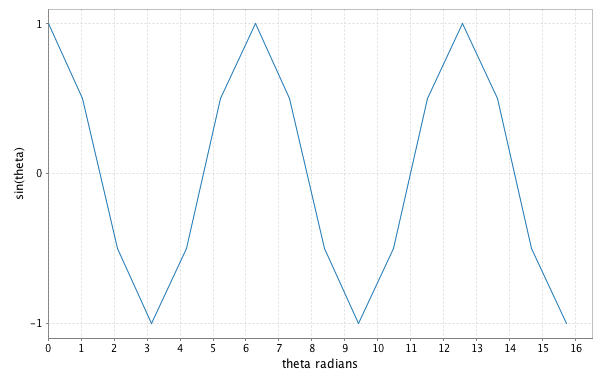

Lecture 5: Laziness and Streams
Presenter Notes
"Separation of program description from evaluation" is promised to us at the beginning of this book. Laziness is a fundamental component of this.
We will write descriptions for infinitely long processes, but only evaluate them for a finite length of time, or within some bound.
First we must review Scala's syntax for laziness, then we will see a data structure that separates "description from evaluation": Stream
Presenter Notes
val
Strict/eager, memoizes
val foo = 5 + 5
println(foo)
This program is evaluated line by line, from top to bottom. The cost of time in calculating 5+5 is paid on the first line. This cost will only be paid once, ever, for any use of foo.
Presenter Notes
lazy val
lazy, memoizes
lazy val foo = 5 + 5
println(foo)
The cost of time and memory in calculating 5+5 is paid on the second line. This cost will only be paid once, ever, for any use of foo.
Presenter Notes
def
lazy, does not memoize
def foo = 5 + 5
println(foo)
Call-by-need versus call-by-name
The cost of time and memory in calculating 5+5 is paid on the second line. This cost will be incurred every time foo is used.
Presenter Notes
Thunk
A "thunk" uses a function to provide laziness:
val thunk: () => Int = () => 123
expensive will not be called until the thunk is called.
val thunk2: () => Long = () => expensive()
// cost incurred here
val expensiveResult = thunk2()
Comments on evaluation strategies
Wikipedia says that a "thunk" in Haskell memoizes. This is not true in Scala.
Presenter Notes
Arguments to a function
Call-by-name with =>
Avoid the evaluation of the B value if the A value is available
sealed trait Option[+A] {
...
def getOrElse[B >: A](default: => B): B =
this match {
case Some(get) => get
case None => default
}
...
}
in common.lecture4.FPOption
See Section 9.5 of Programming in Scala
I feel this call-by-name syntax is far more understandable/justifiable after seeing the Stream combinators. Some Stream combinators cannot be implemented without call-by-name syntax. Outside of the context of lazy data structures like Stream, the only justification for call-by-name syntax is "short-circuiting" and avoiding the evaluation of expensive expressions, a.f.a.i.k. "Separation of description from evaluation" encompasses (1) short-circuiting, (2) avoiding the evaluation of unnecessary, expensive expressions, and (3) lazy data structures.
Presenter Notes
List (eager)
// abstract
sealed trait List[+A]
// concrete
case object Nil
extends List[Nothing]
case class Cons[+A](head: A,
tail: List[A])
extends List[A]
Presenter Notes
Stream
a.k.a. lazy list
// abstract
trait Stream[+A]
// concrete
case object Empty
extends Stream[Nothing]
case class Cons[+C](h: () => C,
t: () => Stream[C])
extends Stream[C]
- the tail of
ConsofListis eager - the tail of
ConsofStreamis lazy
This is the most important difference between the two
Presenter Notes
Scala does not support call-by-name parameters in case class.
We use thunks as a work-around.
case class Cons[+C](h: () => C,
t: () => Stream[C])
extends Stream[C]
The chosen syntax for a call-by-name argument was probably chosen for its resemblance to a thunk.
// Compare
def bar(x: => Int)
// to
def baz(x: () => Int)
A thunk is a function with no argument
Presenter Notes
scala> Cons(() => 1,
() => Cons(() => 2,
() => Cons(() => 3,
() => Cons(() => 4,
() => Empty
)
)
)
)
res0: common.lecture5.Cons[Int] =
Cons(<function0>,<function0>)
Note the type has been inferred as Cons[Int] rather than Stream[Int]. We also encountered this issue with List.
Before "tying the knot" and introduction of take, I think its necessary to show a manually constructed Stream like this. The stack trace of take on an infinite Stream will arrive at this finite Stream.
Presenter Notes
Smart constructor
def cons[A](hd: => A, tl: => Stream[A]):
Stream[A] = {
lazy val head = hd
lazy val tail = tl
Cons(() => head, () => tail)
}
def empty[A]: Stream[A] = Empty
The cons smart constructor (1) memoizes (2) hides the thunks (3) assists with type inference. Because of the type annotation def cons[A](...): Stream[A], a constructed Cons will be inferred to be of type Stream, not of type Cons. This is the same issue we encountered with Cons of List. The empty[A] smart constructor only assists with type inference
Presenter Notes
Using the smart constructor
scala> cons(1, cons(2, cons(3, cons(4, empty))))
res1: common.lecture5.Stream[Int] =
Cons(<function0>,<function0>)
Type has been inferred correctly as Stream[Int].
Equivalent to the structure two slides earlier. Head and Tail elements of each Cons are lazy. Call-by-name syntax in smart constructor removes need for thunks
Presenter Notes
Tying the Knot
With strict evaluation, fibonacciHelper would be an endless loop and lead to stack overflow.
def fibonacciHelper(a: Int, b: Int): Stream[Int] =
Stream.cons(a, fibonacciHelper(b, a+b))
val fibonacci: Stream[Int] = fibonacciHelper(0, 1)
fibonacci.print(22)
output
0, 1, 1, 2, 3, 5, 8, 13, 21, 34 ...
It will still lead to stack overflow, but the lazy list gives us more control over this. We still need to limit our consumption of the Fibonacci stream. print will be explained later
Presenter Notes
Challenge question
Use the cons smart constructor to implement a sine wave. Implement the sine wave for multiples of π/3 radian, or multiples of π/2 radian.
Utilize math.sqrt(Double): Double
def sinePositive: Stream[Double] = ???
def sineNegative: Stream[Double] =
sinePositive.map { d => -1*d }
Presenter Notes
sinePositive corresponds to the top half of the unit circle, including (1, 0) and excluding (-1, 0)

Presenter Notes
Answer
def sinePositive: Stream[Double] =
Stream.cons(0,
Stream.cons(1.0/2,
Stream.cons(math.sqrt(3)/2,
Stream.cons(1.0,
Stream.cons(math.sqrt(3)/2,
Stream.cons(1.0/2, sineNegative)
)))))
def sineNegative: Stream[Double] =
sinePositive.map { d => -1*d }
sinePositive.print(32)
Presenter Notes
0.0
0.5
0.8660254037844386
1.0
0.8660254037844386
0.5
-0.0
-0.5
-0.8660254037844386
-1.0
-0.8660254037844386
-0.5
0.0
0.5
...
Presenter Notes
from
def from(i: Int): Stream[Int] =
cons(i, from(i + 1))
example
scala> Stream.from(0).print(8)
0
1
2
3
4
5
6
7
Presenter Notes
Challenge question
We can turn an infinite Stream into a finite Stream with take. take is a method that exists inside the Stream trait.
countFromZero.take(6) will insert an Empty after the sixth element of the infinite Stream.
Complete the implementation of take:
trait Stream[+A] {
...
def take(n: Int): Stream[A] = this match {
case cons(head, lazyTail) if ??? => ???
case cons(head, lazyTail) if ??? => ???
case Empty => empty[A]
}
...
}
print relies upon take
Presenter Notes
Presenter Notes
Answer
trait Stream[+A] {
...
def take(n: Int): Stream[A] = this match {
case cons(head, lazyTail) if n>0 =>
cons(h, lazyTail.take(n-1))
case cons(head, lazyTail) if n<=0 =>
empty[A]
case Empty =>
empty[A]
}
...
}
Presenter Notes
Trace
from(0).take(4)
cons(0, from(1).take(3))
cons(0, cons(1, from(2).take(2)))
cons(0, cons(1, cons(2, from(3).take(1))))
cons(0, cons(1, cons(2, cons(3, from(4).take(0)))))
cons(0, cons(1, cons(2, cons(3, Empty))))
Evaluation is explained later. take is not evaluation. If only two elements are evaluated, then this trace will be shortened.
Presenter Notes
foldRight
foldRight on List
trait List[+A] {
...
def foldRight[B](z: B)
(f: (A, B) => B): B =
as match {
case Nil => z
case Cons(a, tail) =>
f(a, tail.foldRight(z)(f))
}
...
}
Presenter Notes
foldRight on Stream
trait Stream[+A] {
...
def foldRight[B](z: => B)
(f: (A, => B) => B): B =
this match {
case Empty => z
case cons(head, lazyTail) =>
f(head, lazyTail.foldRight(z)(f))
}
...
}
Remind them lazy tail in Stream.cons; case class Cons+C
Presenter Notes
foldRight is not suitable to be used on an infinite Stream.
Furthermore, foldRight is not tail-recursive.
trait Stream[+A] {
...
def foldRight[B](z: => B)
(f: (A, => B) => B): B = ...
...
}
Point out which combinators on Stream are suitable to be used on an infinite Stream, and which are not
Presenter Notes
Limit an infinite Stream to a finite length with take before calling foldRight.
Despite this precaution, a Stream of finite length may still overflow the stack because of foldRight's tail-calls.
val summed =
Stream.from(0).take(100).foldRight(0)(_+_)
println(s"sum of 0 to 99, inclusive = $summed")
// sum of 0 to 99, inclusive = 4950
Presenter Notes
map
trait Stream[+A] {
...
def map[B](f: A => B): Stream[B] = {
def g(a: A, sb: => Stream[B]): Stream[B] =
cons(f(a), sb)
foldRight(empty[B])(g)
}
...
}
Presenter Notes
val radians: Stream[Double] =
Stream.from(0).map { i =>
i.toDouble * math.Pi / 3 }
val cosineWave: Stream[Double] =
radians.map { d => math.cos(d) }
An implementation of map on an Array can process the elements in parallel because an Array provides O(1) access to any element. An implementation of map on a List cannot process the elements in parallel because a List provides O(n) access to any element. Mapping over a List occurs sequentially. Understanding this, it is more intuitive how map on a Stream is sequential and lazy. In this example, 66.toChar preceed the lazy evaluation of 67.toChar, and so on. Anyone who thinks mapping over a List happens "all at once" will be confused by mapping over a Stream.
Presenter Notes

Presenter Notes
flatMap
trait Stream[+A] {
...
def append[B >: A](appended: Stream[B]):
Stream[B] = ...
def flatMap[B](f: A => Stream[B]):
Stream[B] = {
def g(a: A, sb: => Stream[B]) =
f(a).append(sb)
foldRight(empty[B])(g)
}
...
}
It is impossible for map to lengthen the Stream. flatMap can do this. We can interpolate more points in the sine wave with flatMap
Presenter Notes
// def flatMap[B](f: A => Stream[B]): Stream[B]
val interpolatedSineWave: Stream[Double] =
sineWave.take(32).flatMap { d =>
Stream.cons(d, Stream.cons(d, Stream.empty))
}
in slideCode.lecture5.SineWave
Presenter Notes

Presenter Notes
Evaluation
Exiting the Stream
trait Stream[+A] {
...
def print(upTo: Int): Unit = {
def f(a: A, remaining: => Int): Int = {
println(a)
remaining - 1
}
this.take(upTo).foldRight(upTo)(f)
}
...
}
Presenter Notes
trait Stream[+A] {
...
def force(n: Int): List[A] = {
def f(a: A, la: => List[A]) = a::la
this.take(n).foldRight(List[A]())(f)
}
...
}
Presenter Notes
def sum(s: Stream[Int], maxElements: Int): Int = {
def f(i: Int, s: => Int) = i + s
s.take(maxElements).foldRight(0)(f)
}
Usage
scala> from(4)
res0: fpinscala.laziness.Stream[Int] =
Cons(<function0>,<function0>)
scala> sum(from(4), 10)
res1: Int = 85
Presenter Notes
unfold
unfold helps to create Streams
def unfold[A, S](z: S)(f: S => Option[(A, S)]):
Stream[A]
Presenter Notes
Many of the exercises can be re-implemented with unfold -- often more cleanly.
def from(n: Int): Stream[Int] =
unfold(n)((n0: Int) => Some(n0, n0+1))
from(5).print(6)
// 5
// 6
// 7
// 8
// 9
// 10
in common.lecture5.StreamExamples
Presenter Notes
def fromTo(lowerInclusive: Int,
upperExclusive: Int):Stream[Int]=
unfold(lowerInclusive){(n0: Int) =>
if (n0 < upperExclusive) Some(n0, n0+1)
else None
}
fromTo(5,8).print(6)
// 5
// 6
// 7
// Stream ends before 6 elements can be printed
in common.lecture5.StreamExamples